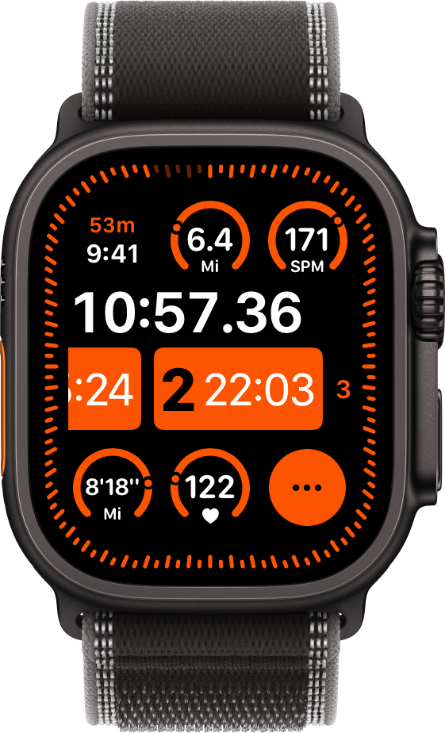

Two Intuitive Modes for Every Run
Split Mode
Automatically split your run by distance or time. Set up 1 km, 1 mile, or custom intervals, and Fourie handles the timing and announcements effortlessly.
Lap Mode
Take full manual control. Simply start your run and tap to mark laps or sets whenever you're ready. No pre-setup required. Lower your wrist to activate Rest Mode and skip adding lap count when you start your lap, so that your laps will be numbered correctly both during and after your run.